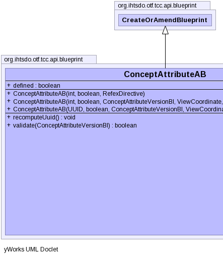
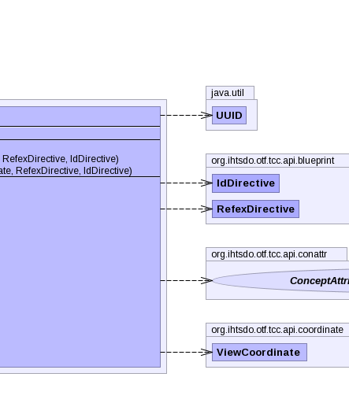

public class ConceptAttributeAB extends CreateOrAmendBlueprint
ConceptAttributeChronicleBI. This is the preferred method for
creating new concepts. This class of blueprint can only be used to amend
existing concepts, use ConceptCB to create a new concept.TerminologyBuilderBI,
ConceptAttributeChronicleBI,
ConceptCB|  |  |
| Modifier and Type | Field and Description |
|---|---|
boolean |
defined |
idDirective, pcs, properties, referencedComponent, refexDirective| Constructor and Description |
|---|
ConceptAttributeAB(int conceptNid,
boolean defined,
ConceptAttributeVersionBI conceptAttributeVersion,
ViewCoordinate viewCoordinate,
RefexDirective refexDirective,
IdDirective idDirective)
Instantiates a new concept attribute blueprint using nid values and a
given
conceptAttributeVersion. |
ConceptAttributeAB(int conceptNid,
boolean defined,
RefexDirective refexDirective)
Instantiates a new concept attribute blueprint using nid values.
|
ConceptAttributeAB(UUID componentUuid,
boolean defined,
ConceptAttributeVersionBI conceptAttributeVersion,
ViewCoordinate viewCoordinate,
RefexDirective refexDirective,
IdDirective idDirective)
Instantiates a new concept attribute blueprint using uuid values.
|
| Modifier and Type | Method and Description |
|---|---|
void |
recomputeUuid()
The UUID for ConAttrAB is set when the enclosing concept is created.
|
boolean |
validate(ConceptAttributeVersionBI conceptAttributeVersion)
Validates this concept attribute blueprint's fields against the given
conceptAttributeVersion. |
addAnnotationBlueprint, addExtraUuid, addLongId, addPropertyChangeListener, addPropertyChangeListener, addStringId, getAnnotationBlueprints, getComponentNid, getComponentUuid, getComponentUUID, getIdMap, getInt, getPrimoridalUuidString, getPrimoridalUuidString, getProperties, getReferencedComponent, getStatus, getUuid, propertyChange, removePropertyChangeListener, removePropertyChangeListener, replaceAnnotationBlueprints, setComponentUuid, setComponentUuidNoRecompute, setCurrent, setReferencedComponent, setRetired, setStatuspublic ConceptAttributeAB(int conceptNid,
boolean defined,
RefexDirective refexDirective)
throws IOException,
InvalidCAB,
ContradictionException
conceptNid - the enclosing concept niddefined - set to true to mark the concept as definedrefexDirective - IOException - signals that an I/O exception has occurredInvalidCAB - if the any of the values in blueprint to make are
invalidContradictionException - if more than one version is found for a
given position or view coordinatepublic ConceptAttributeAB(int conceptNid,
boolean defined,
ConceptAttributeVersionBI conceptAttributeVersion,
ViewCoordinate viewCoordinate,
RefexDirective refexDirective,
IdDirective idDirective)
throws IOException,
InvalidCAB,
ContradictionException
conceptAttributeVersion.conceptNid - the enclosing concept niddefined - set to true to mark the concept as definedconceptAttributeVersion - the concept attribute version to use as a
patternviewCoordinate - the view coordinate specifying which versions are
active and inactiverefexDirective - IOException - signals that an I/O exception has occurredInvalidCAB - if the any of the values in blueprint to make are
invalidContradictionException - if more than one version is found for a
given position or view coordinatepublic ConceptAttributeAB(UUID componentUuid, boolean defined, ConceptAttributeVersionBI conceptAttributeVersion, ViewCoordinate viewCoordinate, RefexDirective refexDirective, IdDirective idDirective) throws IOException, InvalidCAB, ContradictionException
componentUuid - the uuid associated with conceptdefined - set to true to mark the concept as definedconceptAttributeVersion - the concept attribute version to use as a
patternviewCoordinate - the view coordinate specifying which versions are
active and inactiverefexDirective - IOException - signals that an I/O exception has occurredInvalidCAB - if the any of the values in blueprint to make are
invalidContradictionException - if more than one version is found for a
given position or view coordinatepublic boolean validate(ConceptAttributeVersionBI conceptAttributeVersion) throws IOException
conceptAttributeVersion. Compares the status nid, component
nid, and boolean value for defined.conceptAttributeVersion - the concept attribute version to use for
validationtrue, if this concept attribute blueprint's fields
are equal to the specified concept attribute versionIOException - signals that an I/O exception has occurredpublic void recomputeUuid()
throws NoSuchAlgorithmException,
UnsupportedEncodingException,
IOException,
InvalidCAB,
ContradictionException
InvalidCAB if called.recomputeUuid in class CreateOrAmendBlueprintNoSuchAlgorithmException - indicates a no such algorithm exception
has occurredUnsupportedEncodingException - indicates an unsupported encoding
exception has occurredIOException - signals that an I/O exception has occurredInvalidCAB - if the any of the values in blueprint to make are
invalidContradictionException - if more than one version is found for a
given position or view coordinateCopyright © 2013 International Health Terminology Standards Development Organisation. All rights reserved.